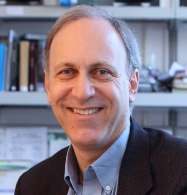
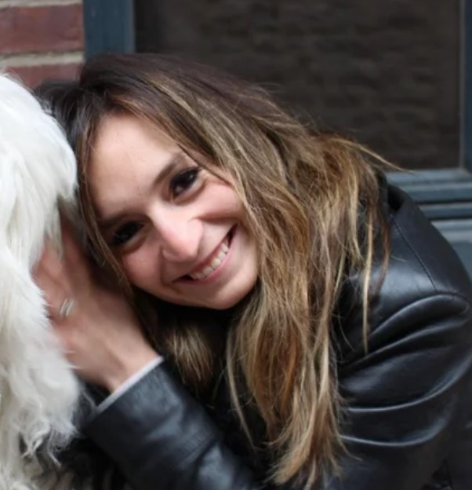
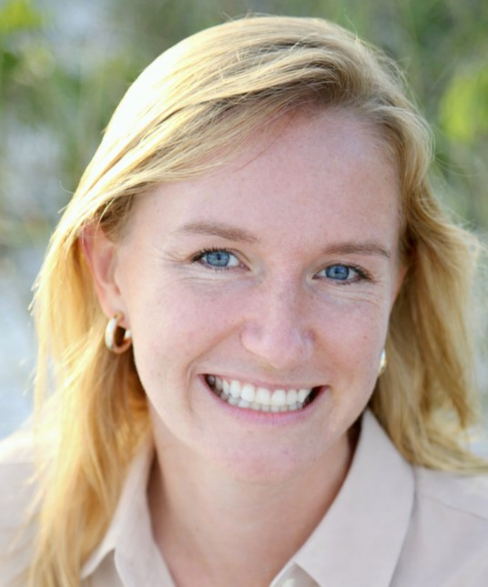
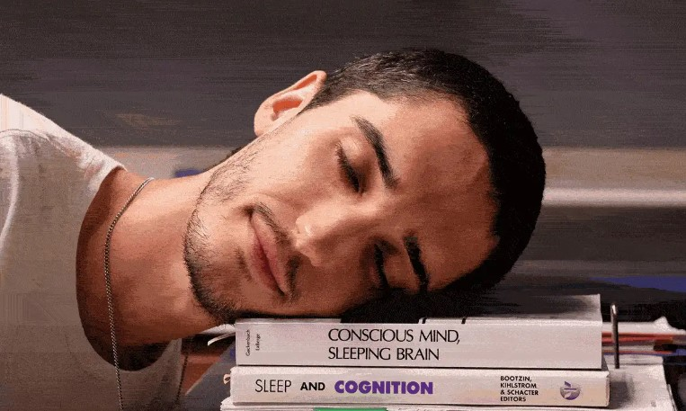

Ken Paller
Northwestern University
I am a PhD candidate in cognitive neuroscience at Northwestern University. I study sleep, lucid dreaming, and contemplative practices.
Visit the Paller Lab website →
Northwestern University

Northwestern University

University of Cambridge

Selected areas of my current research.
What happens in the brain when we realize we are dreaming?.
Investigating how we can influence dreams using sensory stimulation before and during sleep.
Exploring contemplative sleep practices through interdisciplinary research.
Examining how lucid dreaming may help alleviate nightmares and other sleep disorders.